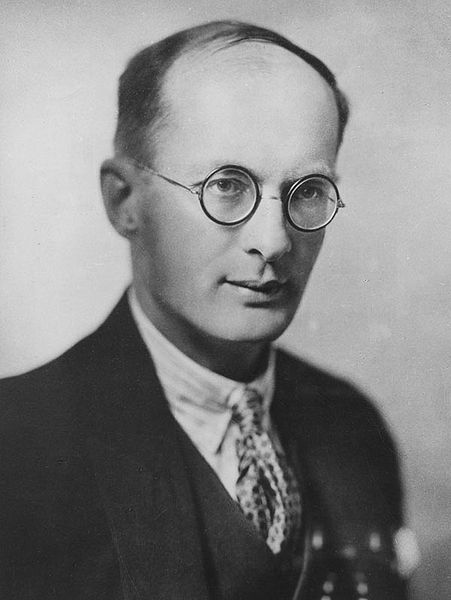

Knockout.JS
Declarative Binding
MVVM
Model = Business Logic
View = Markup / Presentation
ViewModel = Page Logic
User Stories
I wantto ViewPictures of Cats
- Nouns provide the Things the page is concerned with
- Verbs provide the Actions the page should perform
- We can map our Nouns into the ViewModel, or use JS Models
window.viewModel = # nouns cats: ko.mapping.fromJS(<%=@cats.to_json %>) currentCat: ko.observable({}) # verbs showCat: (id) -> window.viewModel.currentCat(_.pluck(window.viewModel.cats(), id)
- Views declare dynamic content declaratively
- Elements can declare bindings to other things too
- You can bind Verbs to DOM Actions
- Declare your view templates in-line
<script type="text/html" id="cat_template"> <li class="cat"> <a data-bind="click: showCat(id), text: name"></a> </li> </script> <ul data-bind="template: {name: 'cat_template', foreach: cats}"> </ul> <img data-bind="src: currentCat().src"/>
Models are just objects
cat = name: 'Bubs' src: '/bubs.jpg'
Unless they aren't
class Cat
save: ->
$.post '/cats',
dataType: 'application/json'
data: ko.utils.toJSON this

Why?
Dependency Tracking
Only update the right parts of your view when it changes
Extensible
Write your own custom bindings easily (Example later!)
Clean
No 'glue code' to write - only declarative bindings
Benefits
Unit Testing
Your viewModel encapsulates all the logic on the page - use Jasmine
ViewModels = Page Objects
Test it server-side with cucumber, no JS runtime needed
Pure Client-side
Once it's in the browser - nice and snappy
Demo
Questions?
- Alex Bartlow
- @alexbartlow
- bartlowa@gmail.com
- http://github.com/alexbartlow/knockoutjs_talk